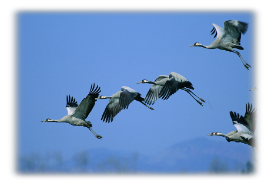
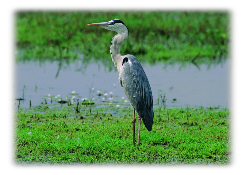
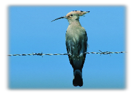
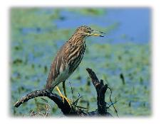
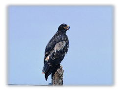

Птицы Красного леса
Бескрайней кажется пёстрая мозаика лесистых холмов и полей Виштынецкой возвышенности, почти морем — синяя гладь Виштынецкого озера и бесконечным океаном — лазурь неба над ним. Но есть существа, которым подвластны эти просторы. Для крылатых созданий нет границ и расстояний, а их голоса радуют и волнуют открытую для красоты душу.


Птицы — часть природного богатства возвышенности
Невозможно представить весенний рассвет без неистового птичьего многоголосья, бирюзовую гладь озера — без тонкого росчерка чайкиного крыла, тёплый летний сумрак — без таинственного и дикого уханья совы, а морозный багрянец и золото осени — без тревожно-радостного журавлиного крика.
Птицы — часть завораживающего образа этой удивительной земли, а также важный элемент её гармоничного развития и здоровья. Своеобразие ландшафта — богатый и разнообразный растительный покров, множество рек и озёр, существенный перепад высот — создаёт разнообразие мест обитания пернатых Виштынецкой возвышенности и Красного леса.
В исходном тексте указано, что в 1994 году Виштынецкая возвышенность была объявлена ключевой орнитологической территорией (КОТ), то есть территорией, играющей важную роль в сохранении птиц и поддержании их видового разнообразия.

Птицы озёр и лесов
В старом тексте отмечены белолобый гусь, красноголовый нырок, хохлатая чернеть и лысуха, особенно многочисленные на озёрах в период миграций. Приводится также наблюдение мигрирующих орланов-белохвостов — до 11 особей (Гришанов, 2000).
В Виштынецких лесах гнездятся или встречаются такие редкие и охраняемые виды, как малый подорлик, орлан-белохвост, скопа и чёрный аист. Источник также упоминает большого подорлика и белоглазого нырка как виды, ранее отмечавшиеся здесь, но не регистрировавшиеся в последнее время на момент подготовки исходного текста.
Виштынецкое и другие озёра возвышенности названы важными местами гнездования большого крохаля и обыкновенного гоголя. Природоохранное значение Виштынецких холмов, Красного леса, озёр и заболоченных низин трудно переоценить.


Текст: Игорь Шелякин. Фото и иллюстрации: материалы, указанные на исходной странице.
Источник: Гришанов Г. В. Ключевые орнитологические территории Балтийского региона России. — СПб., 2000. — С. 67–68.
Численные оценки и сведения о гнездовании перенесены из исторического текста сайта; перед публикацией их следует сверить с современными орнитологическими данными.